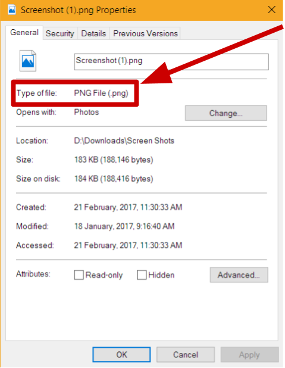
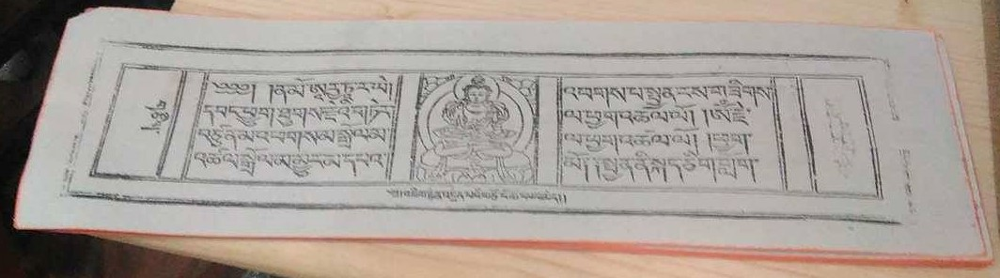
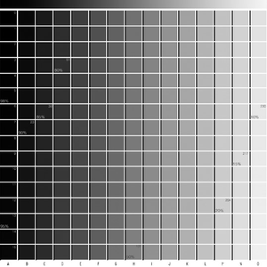

དཔེ་ཀློག་མཉེན་ཆས།
དཔེ་ཀློག་མཉེན་ཆས་ནི་དམིགས་བསལ་རྒྱ་ཆེའི་དོད་སྣང་ཅན་ཚོའི་དགོས་མཁོར་དམིགས་ཏེ་ལག་ཐོག་ཁ་པར་བརྒྱུད་ནས་ནང་བསྟན་དཔེ་ཚོགས་ལྟེ་གནས་ཀྱི་དྲ་ཐོག་དཔེ་མཛོད་སྔོག་འདོན་བྱེད་པའི་གལ་ཆེའི་མཐུན་རྐྱེན་ཞིག་ཡིན། དྲ་ལམ་གྱི་ཤུགས་
ཚད་ལ་རྟེན་ནས་སྒོ་འབྱེད་ཐུབ་མིན་གྱི་དཀའ་ངལ་ཡོད་སྲིད། ད་སྔ་མཉེན་ཆས་འདི་བོད་ཡིག་ཁོ་ནའི་ནང་མ་གཏོགས་མེད་མོད། མི་འགྱང་བར་ཐོན་རྗེས་མའི་ནང་ཨན་ཡིག་དང་རྒྱ་ཡིག་བཅས་ཀྱི་ནང་སྤེལ་འཆར་ཡོད།

འབེྲལ་མཐུད་པ་དང་བཤེར་འབེབས་པའི་ཁ་པར་ཀུ་ཤུ་རྟགས་ཅན་ཡིན་ན་(苹果商店) ཨན་ཊོ་ཁ་པར་རིགས་ (谷歌商店) བཅས་ནས་ཕབ་ལེན་བྱེད་ཐུབ།
དྲ་མེད་དཔེ་ཀློག་བྱེད་ཚུལ།
མཉེན་ཆས་འདི་ནི་ཆེད་དུ་དྲ་མེད་ས་ཁུལ་ཁག་ལ་ཡང་བཀོལ་ཐུབ་པའི་ཁྱད་ཆོས་བཟོས་ཡོད་དེ། དྲ་མེད་ས་ཁུལ་ནས་ཀྱང་ཁྱེད་ཀྱི་ཁ་པར་བརྒྱུད་དེ་ངེད་ཚོགས་པའི་དྲ་ཐོག་དཔེ་མཛོད་ནང་གི་བོད་ཀྱི་བརྩམས་ཆོས་ ༣༥༠,༠༠༠ ལྷག་གི་
མཚན་བྱང་འཚོལ་ཐུབ། བཤེར་འབེབས་པ་དང་འབྲེལ་མཐུད་པས་བཤེར་བྱའི་དངོས་རིགས་འཚོལ་ཞིབ་སྐབས་འཚོལ་ཐབས་ཀྱི་རིམ་པ་ཁག་གཤམ་ན་བཀོད་ཡོད།
-
བརྩམས་ཆོས་ཀྱི་མཚན་བྱང་བྲིས་ནས་འཚོལ།
-
བརྩམས་ཆོས་དེའི་ཆོས་ཚན་སོ་སོའི་མཚན་བྱང་བྲིས་ནས་འཚོལ།
-
རྩོམ་པ་པོའི་མཚན་བྲིས་ནས་འཚོལ།
-
དཔེ་བསྐྲུན་གནས་ཚུལ་སྔོག་ནས་འཚོལ།
དན་གྲངས་གོང་མ་རྣམས་དྲ་བ་ཡོད་མེད་ལ་མ་ལྟོས་པར་སྟབས་བདེའི་ངང་འཚོལ་ཐུབ་པ་ཡིན།

དྲ་རྒྱར་མཐུད་ནས་བཤེར་པར་འཚོལ་བ།
ཐེངས་གཅིག་བཤེར་འབེབས་པས་དྲ་རྒྱ་བརྒྱུད་ནས་ཁྱེད་ལ་མཁོ་བའི་དཔེ་ཆ་དེ་ཁ་པར་ནང་སྒོ་ཕྱེས་དུས་དཔེ་ཆའི་དབུ་ཤོག་དེ་འཆར་ཡོང་། ཤོག་ངོས་གཡས་གཡོན་གཉིས་ཀྱི་གང་རུང་ལ་མནན་ན་ཤོག་ངོས་སྔ་གཞུག་རུང་གི་ཤོག་ངོས་འཕྲོ་མ་ལ་
བལྟ་ཀློག་བྱེད་ཐུབ་པར་མ་ཟད་རྒྱབ་ཤའི་ངོས་ནས་མཛད་བྱང་ལའང་ཞིབ་འཇུག་བྱེད་ཐུབ་པ་ཡིན། འདིས་ཁྱེད་ལ་བརྩམས་ཆོས་འཚོལ་ཞིབ་མགྱོགས་མྱུར་དང་སྟབས་བདེ་བའི་ཁྱད་པར་ཡོད།

སྤེལ་ལ་ཉེ་བའི་ཐོན་རྗེས་མའི་མཉེན་ཆས།
(BDRC) ནང་བསྟན་དཔེ་ཚོགས་ལྟེ་གནས་ཀྱིས་མི་འགྱང་བར་ཁྱེད་ཀྱིས་རེ་སྒུག་བྱེད་ཆོག་སའི་མཉེན་ཆས་ཐོན་རྗེས་མ་སྤེལ་འཆར་ཡོད། ཐོན་གཉིས་པའི་ནང་རྒྱ་ཆེའི་ཀློག་པ་པོས་སྟབས་བདེའི་ངང་ངེད་ཚོགས་པའི་དཔེ་མཛོད་ནང་གི་
བརྩམས་ཆོས་གསར་བ་ཁག་ལ་བལྟ་ཀློག་བྱེད་ཐུབ་པ་དང་ཐོན་གསར་པ་ཁ་གསབ་བྱེད་སའི་ཁྱད་ཆོས་བཅས་འཛོམས་ཡོད་པར་མ་ཟད། ཨན་ཡིག་དང་རྒྱའི་སྐད་གཉིས་ཀྱི་ནང་ཡོད་པ། དེ་བཞིན་ཐད་ཀར་དཔེ་ཆའི་ pdf ཕབ་ལེན་བྱེད་ཐུབ་པའི་
ཁྱད་ཆོས་ཀྱང་འཛོམས་ཡོད། ཐོན་གསུམ་བའི་ནང་མཉམ་ལས་ཀྱི་སྡེ་ཚན་འགའ་འཛོམས་ཡོད།
དཔེར་ན། དཔེ་ཆ་བཤེར་འབེབས་ཀྱི་སྙན་ཞུ། ཉར་ཚགས་སྐོར་གྱི་བསམ་འཆར། དཔེ་མཛོད་ནང་གི་དཔེ་ཆའི་ཐད་ཀྱི་བསམ་འཆར། གློག་ཀླད་ནང་བཀོལ་རྒྱུའི་མཉེན་ཆས། མཉེན་ཆས་འདིས་ཁྱེད་ཀྱི་གློག་ཀླད་འཆར་པང་ངོས་ནས་ཐད་
ཀར་ངེད་ཚོགས་པའི་དཔེ་མཛོད་སྔོག་འདོན་བྱེད་ཐུབ་པར་མ་ཟད་། ངེད་ཚོགས་པའི་དཔེ་མཛོད་ཀྱི་ལས་གཞི་དང་ཕན་ཚུན་མཉམ་ལས་རམ་འདེགས་བྱེད་ཐུབ་པ་བཅས་ཀྱི་ཆ་རྐྱེན་འཛོམས།